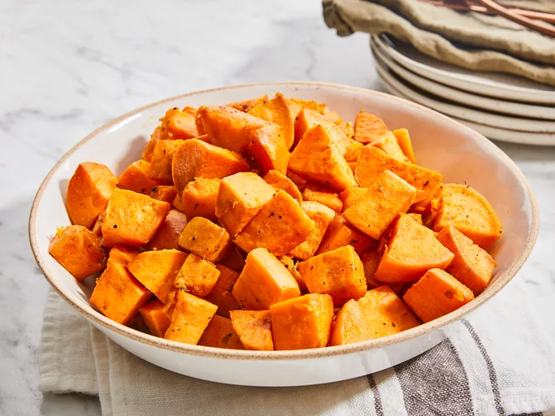

Baked Sweet Potatoes

Description
These baked sweet potato cubes will pair perfectly with all your favorite seasonal dinners.
These baked sweet potatoes are simply seasoned with dried oregano, salt, and pepper. Of course, you can flavor them however you like.
Ingredients
- 2 tablespoons olive oil
- 3 large sweet potatoes
- 2 pinches dried oregano or to taste
- 2 pinches salt
- 2 pinches ground black pepper
Steps
- Gather all ingredients.
- Preheat the oven to 350 degrees F (175 degrees C). Coat the bottom of a glass or nonstick baking dish with olive oil, just enough to coat.
- Wash and peel sweet potatoes; cut into medium pieces.
- Place in the baking dish and stir to coat with olive oil. Sprinkle with oregano, salt, and pepper.
- Bake in the preheated oven until soft and fork-tender, about 45 minutes to 1 hour.
- Enjoy!
Home